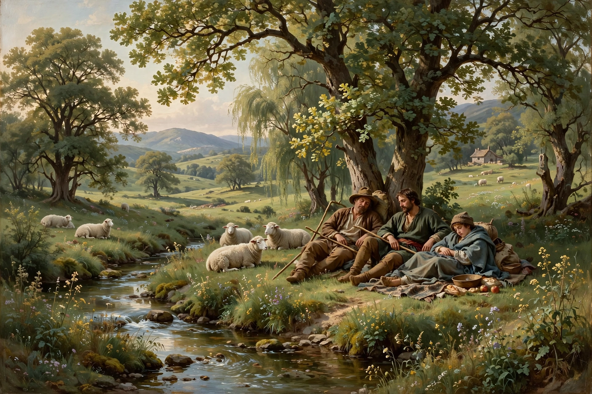

Arcadia (Greek: Ἀρκαδία) refers to a vision of pastoralism and harmony with nature. The term is derived from the Greek province of the same name, which was the dwelling place of the god Pan. In Virgil's Eclogues, Arcadia became an idealized, untamed wilderness where shepherds lived in innocent simplicity. The concept also figures in Renaissance literature and art — notably Jacopo Sannazaro's pastoral romance Arcadia (1504), Sir Philip Sidney's Arcadia, and the paintings of Nicolas Poussin, including the famous Et in Arcadia ego, a reminder that death exists even in paradise.

The historical Arcadia of the Peloponnese was a rugged, mountainous region whose inhabitants were regarded by other Greeks as rustic and primitive. Hellenistic and Roman poets transformed this remoteness into a virtue: Theocritus's Idylls set singing shepherds in Sicily, and Virgil transplanted the setting to Arcadia itself, making it the symbolic home of bucolic poetry. Renaissance humanists revived the vision as a lost golden age of natural freedom, music, and love, in contrast to the corruption of courts and cities.
"Arcadian" remains a byword for idyllic rural innocence. The theme influenced European landscape gardening, the English pastoral tradition, and later back-to-the-land and environmental ideals. Modern uses range from Tom Stoppard's play Arcadia (1993) to the naming of towns and parks.